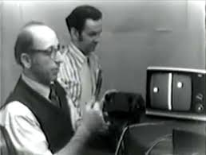

1. Quem criou o primeiro video game?
Ralph Baer, nascido em 8 de março de 1922 em Rodalbe na Alemanha e morreu no dia 6 de dezembro de 2014 aos 92 anos em Nova Hampshire nos Estados Unidos foi um engenheiro, empreendedor, desenvolvedor de jogos eletrônicos, designer e inventor alemão, naturalizado americano, pioneiro dos jogos eletrônicos e premiado com a Medalha Nacional de Tecnologia e Inovação (2004), Medalha Edison IEEE (2014). Desenvolveu, por conta própria, a primeira ideia para um console de videogame doméstico, o Magnavox Odyssey que foi o primeiro console criado. Conhecido como o "pai dos videogames".

Magnavox foi um console digital. No entanto, como todos os consoles até a oitava geração, ele utilizava um circuito analógico de saída de vídeo, devido ao fato dos televisores da época serem analógicos. Além disso, assim como o Nintendo 64 e posteriores, contava com um joystick analógico. Devido a estes dois fatores, muitos colecionadores consideram o console Magnavox como analógico, o que levou Baer a esclarecer que o console realmente era digital. Os sinais eletrônicos trocados entre as várias partes (geradores de sincronização, matriz de diodos etc.) eram binários. O Magnavox era capaz de mudar a cor da tela para simular diversos cenários, mas no final a função foi removida, e no produto final de 1975 foi substituída por 12 folhas de acetato.
Odyssey 100, foi o primeiro console comercializado. Odyssey 200, foi o segundo console da série, lançado no mesmo ano de seu antecessor, Odyssey 100. Vinha com dois chips da Texas Instruments, que adicionavam o jogo smash e algumas marcações na tela. E até 4 pessoas podiam jogar nela em simultâneo. Odyssey 300, terceiro console da série. Lançado em 1976, a grande diferença do seu antecessor, Odyssey 200 era o design. Odyssey 400, quarto console da série. Também foi lançado em 1976 e foi o primeiro a ter um placar digital. Odyssey 500, quinto console da série. Lançado também em 1976 e teve os tradicionais batedores trocados por desenhos de jogadores, além de mais 4 jogos. Odyssey 2000, sexto console da série. Lançado em 1977, tinha quatro jogos e só era possível jogar com um ou dois jogadores. Odyssey 2001, lançado somente na Europa em 1977, e o equivalente ao Odyssey 4000 americano. Esse console tinha três jogos coloridos, graças ao chip National Semiconductor MM-57105-N. O som e a pontuação eram controlados pela TV. Odyssey 2100, é a versão europeia do Odyssey 5000 americano. Por causa do chip National Semiconductor MM-57186-N, ele tinha seis jogos coloridos com variantes, o que somava 23 jogos. Odyssey 3000, foi lançado em 1977, foi o sétimo console da série. Vinha com controles destacáveis. Odyssey 4000, foi o último console da série Odyssey nos EUA e contava com novos jogos. Odyssey 5000, foi o último console oficial, ele nunca chegou ser lançado e foi o mais moderno da categoria Odyssey.
O Mognavox Odyssey teve como seus principais jogos o Tênis, Hockey, Smash e Practice e era possível apenas jogos com um ou jogadores (Players).
3. Evolução dos consoles
O mundo dos jogos de console começou em 1972 com o lançamento do Magnavox Odyssey, o primeiro console de jogos da história. Os jogos eram incrivelmente simples, feitos de três pontos brancos e uma linha vertical, devido às limitações técnicas da época. A falta de capacidade de áudio significava que os jogos eram completamente silenciosos, o que reduzia o impacto emocional da jogabilidade. Os desenvolvedores empregaram truques criativos, como usar cartas e dados para expandir a jogabilidade e aprofundar a experiência.

A segunda geração de consoles introduziu mais capacidades e menos limitações técnicas, e coincidiu com a erade ouro dos jogos de fliperama. Os desenvolvedores tinham acesso às capacidades gráficas básicas do console, o que lhes permitia criar sprites de sua escolha e ter capacidades de som mais avançadas. Os controladores começaram a incluir mais botões, dando aos desenvolvedores mais liberdade para fornecer interações mais complexas ao jogador.
A segunda geração de consoles introduziu mais capacidades e menos limitações técnicas, e coincidiu com a erade ouro dos jogos de fliperama. Os desenvolvedores tinham acesso às capacidades gráficas básicas do console, o que lhes permitia criar sprites de sua escolha e ter capacidades de som mais avançadas. Os controladores começaram a incluir mais botões, dando aos desenvolvedores mais liberdade para fornecer interações mais complexas ao jogador.

Devido ao sucesso dos fliperamas, vários jogos foram adaptados e lançados nos consoles. Em muitos casos, a qualidade teve que ser reduzida devido às limitações técnicas dos consoles, mas sua popularidade persistiu. Pac-Man para o Atari 2600, uma adaptação do jogo original de fliperama do mesmo nome, foi o jogo mais vendido para o console.
A segunda geração de jogos introduziu vários conceitos notáveis pela primeira vez. Adventure para o Atari 2600 introduziu o conceito de um espaço virtual maior do que a tela, com o jogo consistindo em várias salas que o jogador podia visitar em vez de uma única tela estática. Video Olympics foi um dos primeiros jogos de console a ter um oponente controlado por computador em seu modo de jogo "Robot Pong", e gêneros como plataformas e jogos de aventura gráfica surgiram.
Hoje, os consoles de jogos são mais avançados do que nunca, com gráficos e jogabilidade incríveis, mas a história desses consoles começa com os jogos simples do Magnavox Odyssey e evolui para a complexidade de hoje. Os desenvolvedores continuam a inovar e empurrar os limites do que é possível em um jogo de console, proporcionando aos jogadores de todo o mundo experiências de jogo cada vez mais incríveis.
4. E-Sports
A origem do e-sports remonta ao final dos anos 70 e início dos anos 80, quando os primeiros jogos eletrônicos foram criados. Nessa época, os jogos eram bastante simples, como Pong e Space Invaders, mas já existiam competições informais entre amigos e jogadores.

Com o tempo, os jogos foram se tornando mais complexos e populares, e as competições se tornaram mais organizadas. Em 1980, a Atari realizou o primeiro campeonato de jogos eletrônicos, o "Space Invaders Championship", que atraiu milhares de jogadores em todo o mundo.
Na década de 90, com a popularização da internet, os jogos eletrônicos se tornavam mais acessíveis e os jogadores podiam se conectar online para competir uns contra os outros. Os primeiros jogos a terem competições online foram o Quake e o Starcraft.
Com o aumento da popularidade dos jogos eletrônicos, comemoramos as primeiras organizações de e-sports, como a Cyberathlete Professional League (CPL) em 1997 e a Major League Gaming (MLG) em 2002. Essas organizações celebraram os primeiros grandes eventos de e-sports, como o CPL Winter Championship em 1999 e o MLG Pro Circuit em 2005.